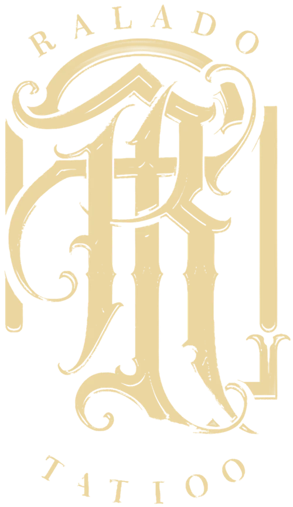
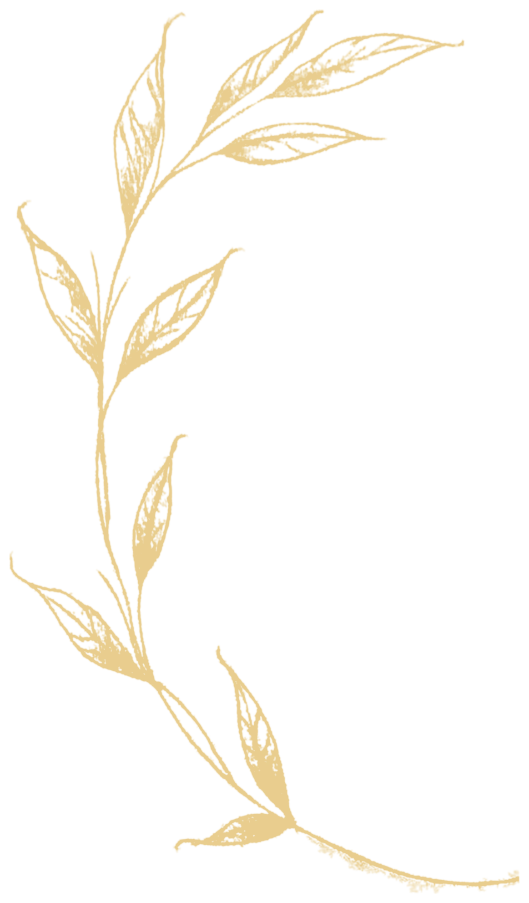
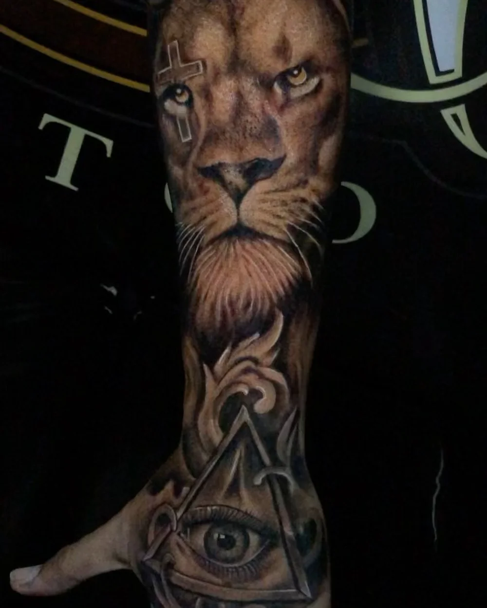
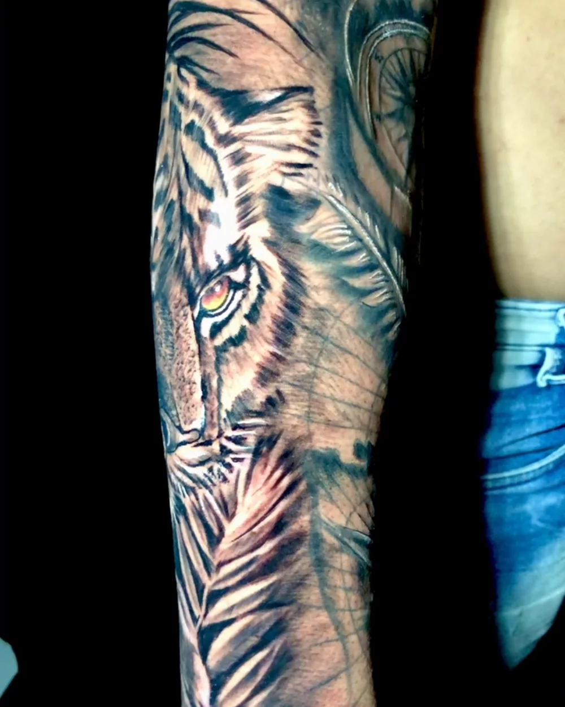
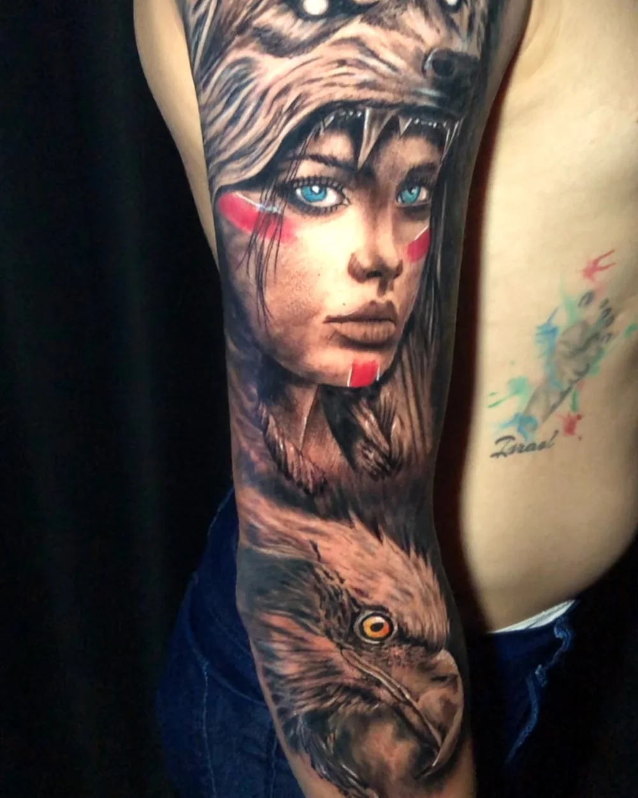
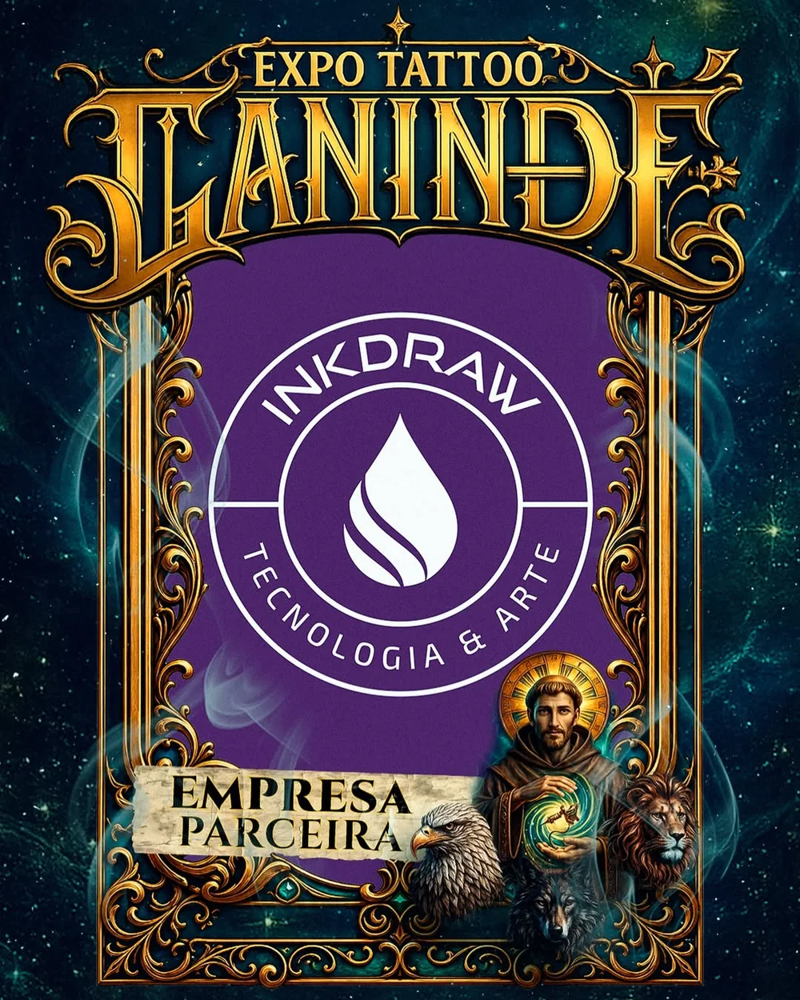
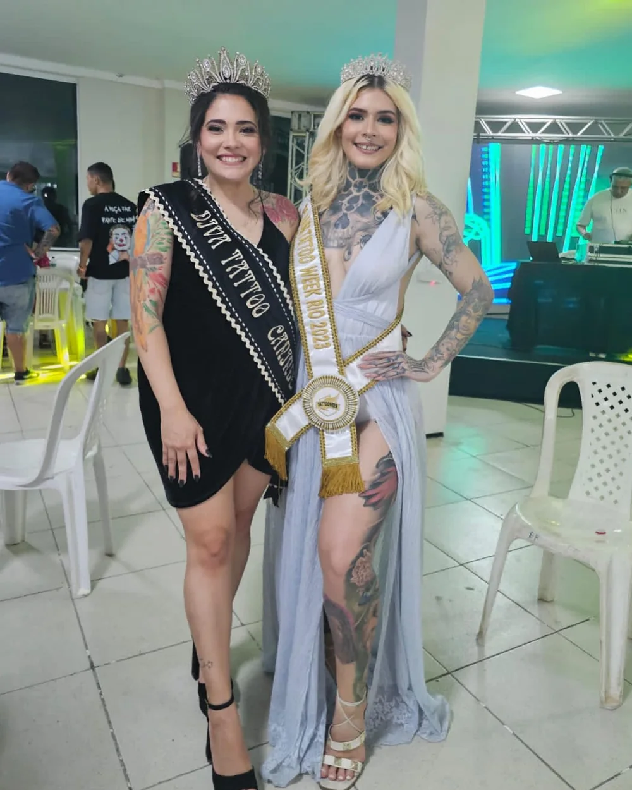
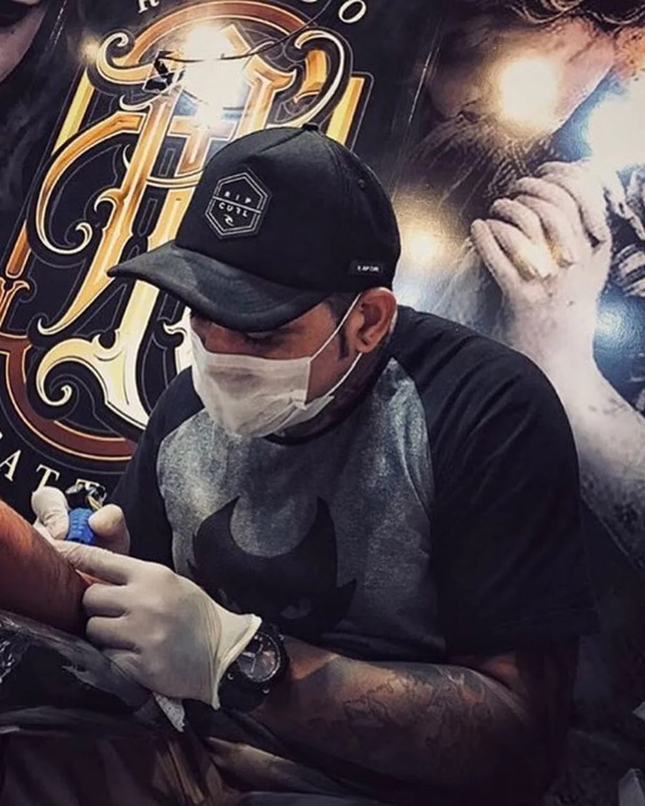

Realismo preto e cinza · Canindé, CE
Ralado Tattoo
A arte fica. A experiência também.

Trabalhos
Feras, fé e homenagens em preto e cinza, com espaço para a cor e o traço fino. Toque numa peça para ver em tamanho grande.

Braços fechados
Leão, tigre, águia, bússola e relógio se encaixam do ombro ao punho numa peça só, pensada inteira antes da primeira sessão.



Canindé Expo Tattoo
Onde grandes artistas e grandes marcas se encontram.
Desde 2017 o Ralado organiza a convenção de tatuagem de Canindé, que chega à 8ª edição em 2026 com artistas de vários estados, workshops e shows.


A convenção
Tatuadores de todo o Brasil trabalhando ao vivo em Canindé.
Diva Tattoo CE
O concurso das mulheres tatuadas, com coroa e faixa.
Flash Day
Dias de flash no estúdio, como o Halloween de 2025.
Workshops
Aulas práticas com nomes como a Monkey Tattoo.

Sobre o Ralado
O Ralado tatua em Canindé desde meados da década passada e fez do realismo preto e cinza a marca do estúdio.
Passou por convenções em Teresina, Natal e Fortaleza, estudou com nomes como Jonathan Tattoo e trouxe para a cidade workshops e a própria convenção.
Arte, atitude e identidade.
Ver o InstagramEstúdio
Ralado Tattoo Studio, na Avenida Presidente Geisel. Orçamento e agendamento pelo WhatsApp ou pelo Direct.
- Endereço
- Av. Presidente Geisel, 1953 · Canindé, CE · 62700-000
- Orçamentos
- (85) 99834-6964
- @ralado_tattoo
- Convenção
- @caninde_expotattoo2026
Pedir orçamento
O pedido chega pronto no WhatsApp do estúdio, com tudo o que o Ralado precisa para responder.
A ideia
Escolha o estilo e conte o que a tatuagem significa.
O local
Diga em que parte do corpo vai ficar.
O tamanho
Pequena, média, grande ou fechamento.
A referência
Na conversa, mande a imagem e uma foto do local.